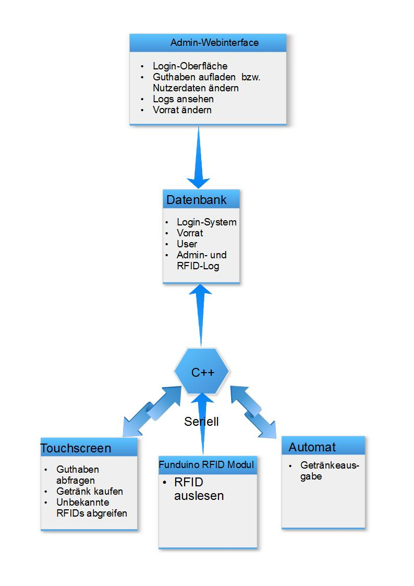

Mat-O-Mat
Ein Robotik Fortgeschrittenenpraktikum - WS 2014/15
Projekt
Zielsetzung
Ziel des Projekts ist die Konstruktions eines Getränkeautomatensystems basierend auf RFID-Karten. Nutzer sollen durch ihre Karte identifiziert werden und mit ihrem eingezahlten Guthaben Getränke kaufen können. Die Verwaltung soll über ein Web-Interface geschehen das auf einem Raspberry Pi liegt. Dieser Raspberry Pi funktioniert zusätzlich als Automat mit einem Touchscreen zur Interaktion und mit einem RFID-Reader für die Karten. Die Getränkeausgabe soll symbolisch mit wenigen mechanischen Teilen angedeutet werden.
Ergebnis
Entwickelt wurde das gefragte System mit einem auf dem Pi laufendem Webserver und User-Interaktion per Display und RFID-Reader und einem Servo zur symbolischen Darstellung der Getränkeausgabe. Zur Nutzung des Systems muss der Pi wie folgt vernetzt werden: Das Display sowie das RFID-Modul (Verkabelung findet man hier) müssen angeschlossen werden. Ausserdem muss das Pi an das gewünschte Netzwerk und an eine Stromquelle angeschlossen sein. Die nötige Software ist schon auf dem Pi bzw. auf dem MC, d.h. für eine Nutzung des Automaten muss nur unsere C++/Qt (PATH: TODO) executable ausgeführt werden. Um als Admin auf den Webserver zuzugreifen muss nur im Browser die IP des Pis im selben Netzwerk eingegeben werden.DEAD Code Download
Ausblick
Zukunftsträchtig wäre es, anstatt der RFID Karten Smartphones mit Near Field Communication (NFC) zur Nutzeridentifikation zu nutzen, eventuell in Kombination mit Bezahldiensten wie z.B. Apple Pay oder Google Wallet.Ausserdem macht eine Auslagerung des Systems Sinn, wenn mehrere Automaten genutzt werden wollen. So ist das gesamte System inkl. Datenbank nicht auf dem Automaten selbst.
Personen
Jakob Schmid, Bachelor Angewandte Informatik
Amos Treiber, Bachelor Angewandte Informatik
Betreuer: Felix Aller und Katja Mombaur
Praktikumsverlauf
Milestones
1. Arduino MC und RFID Modul
Zu Beginn galt es die Verbindung zwischen dem RFID-Modul (Modell RFID-RC522) und dem Raspberry Pi über einen Mikrocontroller herzustellen. Da sich die Lieferung des Raspberry Pi verzörgerte, wurde die Verbindung zunächst mit einem Laptop getestet. Hierzu wurde zuerst das RFID-Modul mit Hilfe von etwas Lötarbeit mit dem Arduino verbunden, die Übertragung zwischen Arduino und Laptop fand dann über serielle Schnittstelle(USB) statt. Bezogen auf das ganze Projekt wurde der Aufwand für diesen Milestone relativ exakt eingeschätzt. Der Softwareteil nahm sehr wenig Zeit in Anspruch, da der Beispielcode von funduino.de nur leicht modifiziert werden musste. Der Hardwareteil gestaltete sich etwas aufwendiger, da zusätzlich provisorisch zu Testzwecken gelötet wurde und unsere Erfahrung mit Löten gering war.
2. Raspberry Pi
Danach wollten wir uns dem Pi widmen. Als dieser da war konnten wir schnell das Betriebssystem Raspbian mit der für den Webserver nötigen Software installieren und unsere entworfene Datenbank aufsetzen. Da der Pi aber sehr langsam ist entwickelten wir erst alles auf dem PC (siehe Abschnitt 3 und 4). Danach hatten wir ein paar Probleme mit dem Pi: Da wir uns entschieden hatten, die User-Interaktion mittels C++/Qt zu gestalten und diese schon mit Qt5 entwickelt hatten gestaltete es sich wegen der Größe der Qt-Bibliothek als schwierig, Qt auf dem Pi zu installieren. Eine größere SD-Karte war nötig, weswegen wir den Pi einer anderer Gruppe nahmen. Qt5 hätten wir auf dem Pi selbst kompilieren müssen (was sehr lange dauert), weswegen wir Qt4 installierten und einige Probleme hatten, von Qt5 auf Qt4 zu wechseln.
3. Webinterface
Das Webinterface wurde klassisch mit PHP, MySQL und javascript/jQuery entwickelt. Zuerst war ein Login-System nötig, dabei nutzten wir das System von Wiki-How. Dann implementierten wir die Seiten, die eine Manipulation der Datenbanktabellen erlaubten. Weil keiner von uns Erfahrung damit hatte wurden wir mit den üblichen, kleineren Problemen der Webentwicklung konfrontiert. Diese liessen sich aber auch schnell wieder lösen. Das Grundgerüst war schnell entwickelt und alle Funktionen implementiert, da die Vorraussetzungen klar gegeben waren. Während des Praktikums fügten wir noch ein paar "nice-to-have" Funktionen ein (wie z.B., dass die Änderung eines Tabelleneintrags wieder entfernt wird, wenn der Admin diese nicht ändern will).
4. User-Interaktion
Der erste Ansatz war, da wir bisher bereits mit Websprachen gearbeitet hatten, auch die User-Schnittstelle am Automaten unter anderem mit Websprachen zu erstellen(z.B. mit Python für die serielle Schnittstelle und PHP/JS für die Darstellung). Diese Idee schien auch dadurch attraktiv, dass die User-Schnittstelle auf den ersten Blick wenig komplex wirkte und so eine Lösung, die eher "quick and dirty" war, naheliegend war. Bei genauerer Betrachtung stellte sich dies jedoch als wenig praktisch heraus, da eine sinnvolle Kommunikationsschnittstelle zwischen der Oberfläche (PHP/JS) und der dahinterliegenden Businesslogik (Python) fehlte. Um diese Probleme zu lösen, entschieden wir uns dafür, C++ mit Qt zu verwenden. Zusätzlich zur Möglichkeit einfach grafische Oberflächen zu erstellen bot Qt den Signal/Slot-Mechanismus an, der eine einfache Kommunikation zwischen Businesslogik und Oberfläche ermöglicht. Der zusätzliche Aufwand durch Einarbeitung in Qt und Portierung auf den Pi wurde durch die eben genannten Vorteile klar aufgewogen.
5. Mock-Up
Wegen Zeitmangel am Ende des Projekts wurde entschieden, dass das Mock-Up aus nur einem Servo besteht, der über die general purpose input/output (GPIO) Pins des Pis angeschlossen ist. Dieser deutet symbolisch an, dass eine Getränkeausgabe stattfindet, indem er sich bewegt. Ein Problem, das wir nicht lösen konnten, ist, dass der Servo nach der initialisierung während das C++/Qt Programm läuft immer ein Geräusch von sich gibt (bzw. sich leicht bewegt). Die Ursache konnten wir auch nicht feststellen, da wir dafür einfachen C-Code der Library wiringPi nutzten und der C-Code an sich ohne Probleme ausgeführt wurde. Das Problem muss also seinen Ursprung in der Verwendung in C++/Qt haben.Hardware
Arduino Microcontroller mit RFID-Modul

Genutzt wird ein Funduino Uno Microcontroller mit dem Modell RFID-RC522 RFID Modul. Der Microcontroller kann per USB an einen PC angeschlossen werden und mittels des Moduls die RFID eines RFID-Tags seriell übertragen.
RFID-Tags
Mitgeliefert waren folgende RFID-Tags:
Diese repräsentieren die RFID-Karten, mit denen sich die Nutzer identifizieren können.
Raspberry Pi
Das Raspberry Pi Modell B ist ein populärer Mini-Computer mit den für unser Projekt wichtigen USB- und HDMI-Anschlüssen und den GPIO Pins.
Display
Das geplante Touch-Display war aufgrund von Lieferungsproblemen nicht verfügbar. Genutzt wurde stattdessen ein ähnlich grosses Display ohne Touchfunktion mit USB-Maus zur Steuerung bzw. Simulation eines Touch-Inputs.Software
Aufbau
Im Zentrum steht die MySQL-Datenbank. Diese Verwaltet den Login für die Admin-Schnittstelle und die Daten für den Mat-O-Mat an sich. Die Datenbank für den Login ist aus unten genanntem Tutorial entnommen. Die "matomat" Datenbank ist wie folgt aufgebaut:
CREATE TABLE transactions (
Username VARCHAR(255) NOT NULL,
ArticleID INT,
ArticleName VARCHAR(255),
Payed FLOAT UNSIGNED,
Time DATETIME,
CONSTRAINT pk_Transaction
PRIMARY KEY (Username, ArticleID, Time));
CREATE TABLE stock(
ArticleID INT NOT NULL AUTO_INCREMENT,
ArticleName VARCHAR(255) NOT NULL,
Quantity INT UNSIGNED,
Price FLOAT UNSIGNED,
LogoPath VARCHAR(255),
PRIMARY KEY (ArticleID));
CREATE TABLE adminaction (
AdminName VARCHAR(255) NOT NULL,
Target VARCHAR(255),
Action enum('CREATE','CHANGE','DELETE') NOT NULL,
Time DATETIME NOT NULL,
Col VARCHAR(255),
OldValue VARCHAR(255),
NewValue VARCHAR(255) NOT NULL,
CONSTRAINT pk_Adminaction
PRIMARY KEY (AdminName, Action, Time));
CREATE TABLE log (
RFID VARCHAR(255) NOT NULL,
Time DATETIME,
PRIMARY KEY(RFID));
CREATE TABLE users(
Username VARCHAR(255) NOT NULL,
Balance FLOAT UNSIGNED,
UserID VARCHAR(255),
PRIMARY KEY(Username));
Im folgenden wird auf die Bedeutung der einzelnen Tabellen der DB eingegangen:
transactions
Diese Tabelle ist ein Log aller getätigten Transaktionen. Ein Eintrag sagt also aus, welcher Nutzer zu welchem Zeitpunkt welches Getränk (inkl. Name und Preis, da diese variabel sind) gekauft hat. Solche Einträge werden automatisch beim Kauf durch unsere C++-Software generiert.
stock
Hier ist der aktuelle Stand der Befüllung des Mat-o-mats gespeichert. Jeder Eintrag ist eine (eindeutige) Artikel-Id mit einem Namen, der aktuellen Anzahl an Flaschen, dem aktuell verlangtem Preis und eines Pfades zu der Bilddatei, die am Automaten angezeigt werden soll. Die Tabelle muss bei Befüllung manuell über die Admin-Schnittstelle geändert werden.
adminaction
Diese Tabelle ist ein Log aller getätigten Aktionen über das Admin-Interface. Ein Eintrag besteht aus dem Username des Admins, dem Ziel der Aktion (z.B. ein Nutzer), der Art der Aktion, der Zeit, der geänderten Spalte des Ziels ("Col", z.B. "Users Balance") und des alten und neuen Wertes, falls vorhanden. Der Sinn ist, dass man bei eventuellen Fehlern des Admins eine Rekonstruktion durchführen kann.
log
Hier ist ein Eintrag vorhanden, wenn eine unbekannte bzw. neue RFID-Karte an den Automaten gehalten wurde. Ein Eintrag besteht aus der RFID und dem Zeitpunkt. Wird über das Admin-Interface eine dieser RFIDs einem (eventuell neuem) Nutzer zugewiesen so wird der Eintrag gelöscht. Es werden also nur noch nicht verwendete RFIDs angezeigt.
users
Hier werden die Nutzer unseres Automatensystems gespeichert. Damit sich nicht jeder Nutzer seine RFID merken muss und da man so eine RFID-Karte auch mal verlieren kann wird er durch einen selbst bestimmten Usernamen eindeutig identifiziert. In jedem Eintrag steht der aktuelle Euro-Betrag und die RFID der Karte des Nutzers.
Admin-Interface
Auf dem Pi soll ein Webserver laufen, über dem ein Administrator die Nutzer des Matomats einfach verwalten kann. Es wird das Apache HTTP Server Project in Verbindung mit HTML, PHP und javascript bzw. jQuery genutzt.
Sicherheit
Weil sich mit dem Admin Interface die Geldbeträge der Nutzer verwalten lassen dürfen nur berechtigte Personen zugreifen. Deshalb haben wir ein Login-System integriert. Da man in Sachen Sicherheit das Rad nicht neu erfinden sollte haben wir das System des Artikels "Secure Login Script" von Wiki-How implementiert.
Mit folgendem PHP-Code werden unsere Seiten umrahmt, um die Sicherheit zu gewährleisten:
<?php
include_once 'includes/db_connect.php';
include_once 'includes/functions.php';
sec_session_start();
?>
<!DOCTYPE html>
<html>
<head>
HTMLHEAD
</head>
<body>
<?php if (login_check($mysqli) == true) : ?>
LOGGED IN CODE
<?php else : ?>
NOT LOGGED IN CODE
<?php endif; ?>
</body>
</html>
Admin Use-Cases
1. Nutzer Hinzufügen
Der Admin soll einen Nutzer mit einem Anfangsbetrag zu den Nutzern hinzufügen. Die RFID muss dafür im Log vorhanden sein und der Username des Nutzers eindeutig sein.
2. Nutzer Bearbeiten
Der Admin soll die Attribute (inkl. Namen und RFID) eines Nutzers ändern können.
3. Nutzer Löschen
Der Admin soll einen Nutzer löschen können.
4. Getränk Hinzufügen
Der Admin soll ein Getränk mit Namen, Preis, Bild und Anzahl zum Stock hinzufügen können.
5. Getränk Bearbeiten
Der Admin soll die Attribute (inkl. Namen und Preis) eines Getränks im Stock ändern können.
6. Getränk Löschen
Der Admin soll ein Getränk aus dem Stock entfernen können.
7. Transaktionen ansehen
Der Admin soll sehen können, welcher Nutzer wann welches Getränk gekauft hat.
8. Admin Log ansehen
Der Admin soll sehen können, welcher Admin wann welchen Use Case ausgeführt hat.
9. Weiteren Admin hinzufügen
Der Admin soll weitere Admins zum Login-System hinzufügen können, sodass auch diese das System verwalten können.
Pages
Bei den folgenden Seiten des Admin-Interfaces kann folgendes getan werden:
Users
Use-Cases 2 und 3Es werden alle Nutzer der Datenbank mit ihren Guthaben und RFIDs angezeigt. Mit einem klick in eine Zelle der Tabelle und anschliessender Bestätigung durch die Enter-Taste wird ein Attribut geändert. Klickt man auf das X einer Spalte wird der Nutzer nach einer Bestätigung gelöscht. Auf der rechten Seite gibt es eine Suchfunktion, um nach Nutzern mit bestimmten Namen zu suchen (dabei wird der Anfang verglichen) und eine Eingabe, um einem ausgewähltem Nutzer einen bestimmten Geldbetrag hinzuzufügen.
Stock
Use-Cases 4,5 und 6Es werden alle Getränke der Datenbank mit ihren Preisen Bildern und Namen angezeigt. Mit einem klick in eine Zelle der Tabelle und anschliessender Bestätigung durch die Enter-Taste wird ein Attribut geändert. Klickt man auf das X einer Spalte wird der Eintrag nach einer Bestätigung gelöscht. Auf der rechten Seite gibt es eine Eingabe, um einem ausgewähltem Getränk nach einer Auffüllung der Bestände eine bestimmte Anzahl an Flaschen hinzuzufügen. Ausserdem befindet sich dort eine Eingabeform, mit der ein neues Getränk hinzugefügt werden kann.
Unknown RFID-Log
Use-Case 1Es werden alle RFIDs der Zeit nach geordnet gezeigt, die dem System unbekannt sind und zu dem angezeigtem Zeitpunkt am Automaten waren. Darauf basierend kann der Admin mit der Eingabe auf der rechten Seite einen neuen User mit einem bestimmten Namen und Startbetrag hinzufügen. Ist dies geschehen so wird der Eintrag aus dem Log gelöscht.
Transactions
Use-Case 7Es werden alle geschehenen Transaktionen der Zeit nach geordnet angezeigt. Da dies ziemlich viele Einträge sind werden nur die ersten 25 Ergebnisse angezeigt. Rechts befindet sich eine Eingabe, mit der nach Einträgen von Nutzern und/oder Zeiten gesucht werden kann. Gesucht wird nach anfänglicher Übereinstimmung, so wird z.B. mit "2015-02-27" der ganze Tag und mit "2015-02-27 12" der Zeitraum 12:00:00-12:59:59 angezeigt.
Admin Log
Use-Case 8Es werden alle geschehenen Admin-Aktionen der Zeit nach geordnet angezeigt. Da dies ziemlich viele Einträge sind werden nur die ersten 25 Ergebnisse angezeigt. Rechts befindet sich eine Eingabe, mit der nach Einträgen von Admins, Ziele, Aktionen, Einträgen und/oder Zeiten gesucht werden kann. Gesucht wird beim Admin und bei Zeiten nach anfänglicher Übereinstimmung, bei Zielen und Einträgen nach Ergebnissen, die den Such-String enthalten und bei den Aktionen exakt (aber case insensitive) nach den möglichen Aktionen "CREATE", "CHANGE" und "DELETE".
Register new Admin
Use-Case 9Vom Wiki-How Login-System übernommen
User-Interface
Auf dem Pi wird eine Qt/C++-Anwendung ausgeführt, die verschiedene Menüs auf dem Display anzeigt, welche auf Nutzereingaben via Touch-Display oder RFID-Reader reagiert. Bei den entsprechenden Eingaben greift die Anwenung außerdem auf die Datenbank zu und steuert den Servo (siehe Aufbau).
Menüs
Die Menüs sind jeweils als Subklasse von QWidget implementiert. Auf dem Display werden folgende Menüs dargestellt:
IntroductionMenu
Hier wird ein kurzer Willkommenstext angezeigt. Das IntroductionMenu ist das Menü, welches standartmäßig angezeigt wird, sollte keine bekannte Karte am RFID-Reader anliegen.
BuyMenu
Das BuyMenu öffnet sich, nachdem ein neuer aber bekannter Nutzer seine Karte an das RFID-Lesegerät hält. Es werden der Name des Nutzers, sein aktuelles Guthaben und alle in der Datenbank vorhandenen Artikel mit ihrem Preis angezeigt. Ist ein Artikel nicht mehr verfügbar (Anzahl der Flaschen ist 0) oder besitzt der Nutzer nicht genug Guthaben, um diesen Artikel zu kaufen, so wird der entsprechende QPushButton ausgegraut.
Weiterhin enthält das BuyMenu einen Abbrechen-Button und einen Timeout, über den es möglich ist sich auszuloggen und ins IntroductionMenu zurückzukehren.
CompletionMenu
Ins CompletionMenu gelangt der Nutzer, wenn er im BuyMenu einen Artikel zum Kauf ausgewählt hat. Das CompletionMenu führt den eigentlichen Kaufvorgang durch, zieht also den Preis des Artikels vom Guthaben des Nutzers ab und steuert den Servo an, der symbolisch für eine Getränkeausgabe steht. Es wird dann eine kurze Erfolgsmeldung angezeigt.
Das IntroductionMenu wird durch einen Timeout oder das halten einer anderen RFID-Karte an das Lesegerät verlassen.
UnknownIDMenu
Wie der Name schon verrät öffnet sich dieses Menü sobald eine der Datenbank unbekannte Karte registriert wird. Es wird eine kurze Nachricht angezeig, die auf diese Tatsache hinweist und nahelegt sich mit dem Admin in Verbindung zu setzen.
Das UnknownIDMenu kann durch einen OK-Button oder das halten einer anderen RFID-Karte an das Lesegerät verlassen werden. In dieser Darstellung werden die kürzeren deutschen Begriffe verwendet. IntroductionMenu=Willkommen, BuyMenu=Kaufen, CompletionMenu=Erfolg, UnknownIDMenu=Unbekannte ID loggen
Nutzer Use-Cases
1. Kontostand einsehen
Der Nutzer soll nachdem er seine Karte an den RFID-Leser gehalten hat seinen Kontostand ansehen können. Nach einer kurzen Zeit ohne RFID-Karte am Gerät soll das Willkommenmenü erscheinen, um einen Missbrauch durch nachfolgende Nutzer zu verhindern (das gilt für jeden Use-Case)
2. Getränk kaufen
Der Nutzer soll nachdem er seine Karte an den RFID-Leser gehalten hat Optionen in Form von Buttons mit Bildern haben, um ein gewünschtes Getränk zu kaufen. Dieses wird vom Automaten ausgegeben und die Transaktion ist vollständig.
Quellen
In diesem Projekt wurden zustätzlich folgende Quellen verwendet: